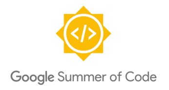
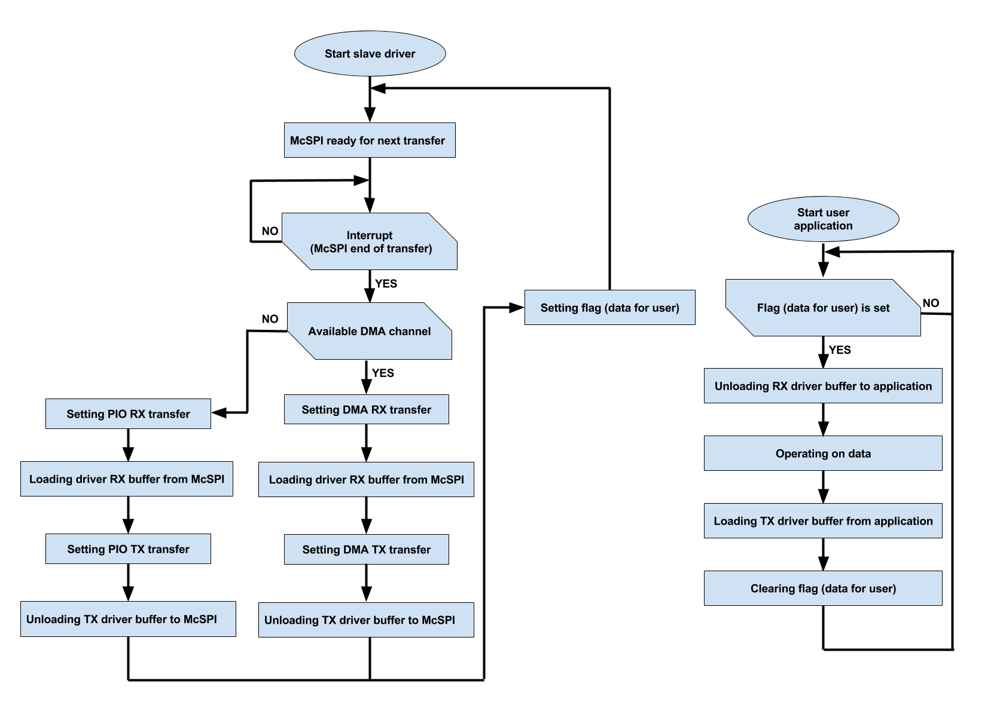
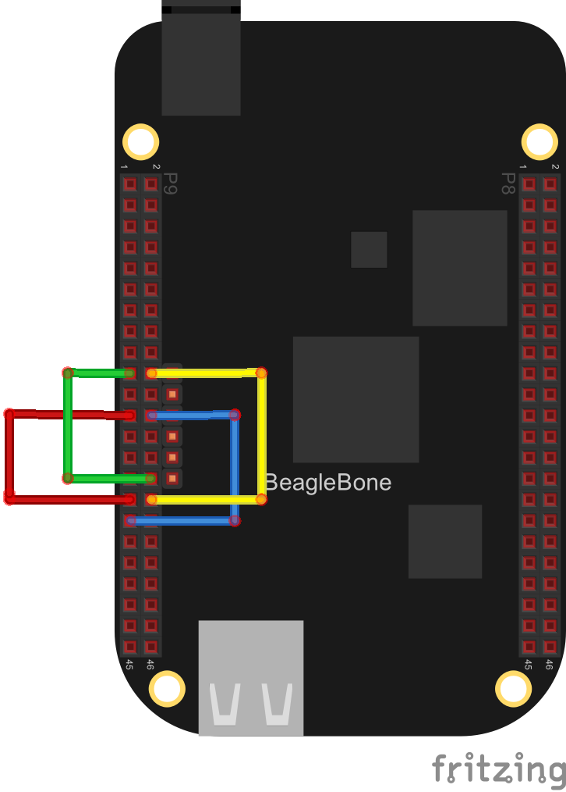
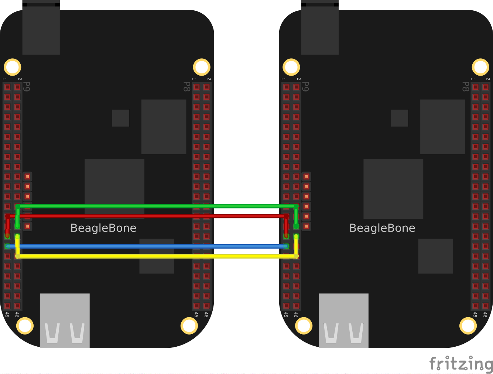

SPI slave driver implementation
- Introduction
- Links
- Block diagram
- Slave driver in Linux architecture
- Problems
- Development timeline
- AM335x and McSPI data sheets
- Books about Linux and LKM
- Building driver on BeagleBone Board
- Building driver on x86 platform
- Device Tree Overlays
- Testing and wiring
Introduction
SPI slave driver implementation. The task is to create a driver controlling SPI hardware controller in slave mode,
and to ensure optimal performance through the use of DMA and interrupt. Creating an easy to implement realization
of SPI slave would definitely help the BeagleBone community members to write applications based on SPI much more
easily. The first implementation of my protocol driver is going to example of a bidirectional data exchange.
This application will provide the BeagleBone community with valuable experience and will be a good example
of SPI slave. Hardware limitations make it impossible to perform any realization of the device using SPI slave.
Sending away data to the master during one transaction is not possible. One transaction is enough to receive data
by slave device. To receive and send back data, two transactions are needed. The data received from master device
in a single transaction is transferred to the user after completing the transaction. The user's reply to received
data is sent in the next transaction.
- Student: Patryk Mezydlo
- Mentors: Michael Welling, Andrew Bradford, Matt Porter
- Organization: BeagleBoard.org
Links
Block Diagram

Slave driver in Linux architecture
The framework in Linux should have 3 layers. In this way, there can be low level
hardware interfaces to SPI hardware like McSPI in slave mode, a middle layer of common
functions to call by protocol drivers, and then a top protocol driver layer which can be used to implement.

Problems
The main problems that don't allow us to create a fully universal generic SPI slave driver.
- The master device can begin the transaction at any time, even if the slave device isn't ready to receive data.
- The transfer can be of any length, as standard SPI does not specify the frame’s length.
Theoretically, the master device can send so much data that the slave device would stop receiving it because of memory overflow.
- SPI interface is a rather fast interface (10s or 100s of MHz), so with too fast clock the system can’t keep up with
generated interrupts. SPI slave controller will hammer the system with interrupts and the system might become unresponsive.
- Even if you manage to pass data to userspace during the transaction, user will have no
time to return the response that will be transferred to the master in the same transaction.
- When transaction is short but often repeated, slave device has no time to set the DMA transfer.
- The register with the contents of the data to be sent must be loaded by DMA before the transaction
(high state on cs line). There is no way to load a register of broadcasting prior to the transaction,
because you do not know the address of the data to come back before the transaction.
Solution:
- The slave device, after installing the driver and DTS, will be ready to receive the data.
The user must set the SPI slave device before the master device.
- During the installation of the driver, the user must declare the maximum depth of data buffer.
The length is the same for tx and rx. Transfer may be shorter, but not longer than the declared length.
- The maximum speed of the slave mode specified in the documentation is 16Mhz as the maximum speed of SCLK line.
- Holding the response in memory and sending it in the next transaction solves the problem.
The time between the transactions is greater than between the reception and transmission during a single transaction.
- Two-stage transactions allow to use DMA for loading and unloading mcspi buffer.
Development timeline
Each week I will devote a few hours to write the documentation.
-
Before the first week (before 24 May)
- create a GitHub repository ✔
- create eLinux page ✔
- create wiki page ✔
- prepare a few sd card with a Firmware Images ✔
- installation of necessary software ✔
- create .travis.yml script ✔
- create README.md ✔
- prepare video presentation ✔
- add license file ✔
- configure vim for kernel coding style ✔
-
Week 1(24 May - 31 May)
- skeleton LKM ✔
- create debugging tool (dynamic debug) ✔
- prepare test application(using spidev) ✔
- preapre DTS for test application ✔
- create DTS for SPI Slave Device settings ✔
-
Week 2(31 May - 07 June)
- beginning work on the driver
- create function: probe, remove, init exit
- implementation platform device
-
Week 3(07 June - 14 June)
- determinate base address (reading DTS device resources)
- create spi slave structure
- allocate memory for device
- fill structures
-
Week 4(14 June - 21 June)
- define McSPI register
- reading and changing registers
-
Week 5(21 June - 28 June)
- set McSPI registers in slave mode
- create interrupt(end of transmission)
-
Week 6(28 June - 05 July)
- allocate memory for tx and rx buffer
- read and write McSPI buffer(PIO)
- first test SPI slave
-
Week 7(05 July - 12 July)
- start working on the dma
- create DMA structure
- create DMA channel
-
Week 8(12 July - 17 July)
- configuring dma channel
- interrupt for dma
- create callback functions
- finally work on DMA
- tests with DMA without API (printk log)
-
Week 9(19 July - 26 July)
- begining work on the framework
- minor number for charter device
- create class and device
- create IOCTL command
- structure for sending and receiving data using IOCTL
-
Week 10(26 July - 02 August)
- create mutex for writing and reading
- asynchronous events for realization flag of notifications
- finally write framework
-
Week 11(02 August - 09 August)
- documentation, tutorials and examples for SPI Slave framework
- create a make script to compile and install in linux
- more tests
-
Week 12(09 August - 20 August)
- clean up code
- latest tests
- documentation, tutorials and examples
AM335x and McSPI data sheets
AM335x ARM® Cortex™-A8 Microprocessors (MPUs) Technical Reference Manual:
AM335x_Techincal_Reference_Manual
Multichannel Serial Port Interface Technical Reference Manual:
McSPI_Technical_Reference_Manual
Books about Linux and LKM
- LINUX DEVICE DRIVERS, Third Edition, Jonathan Corbet, Alessandro Rubini, and Greg Kroah-Hartman pdf is here[1]
- Linux Kernel Development, Third Edition, Robert Love pdf is here[2]
[1]https://lwn.net/Kernel/LDD3/
[2]http://infoman.teikav.edu.gr/~stpapad/linux_kernel_development_3rd_edition.pdf
Building on BeagleBone Board
- Installing compiler:
apt-get install gcc
- Installing kernel headers:
sudo apt-get install linux-headers-'uname -r'
- Cloning SPI slave repository:
git clone git@github.com:pmezydlo/SPI_slave_driver_implementation.git
cd SPI_slave_driver_implementation/
git checkout
- Building SPI slave driver:
make
- Installing the arm32 cross-compiler:
sudo apt-get update -qq
sudo apt-get install -y gcc-arm-linux-gnueabihf
sudo apt-get install bc
- Cloning SPI slave repository:
git clone git@github.com:pmezydlo/SPI_slave_driver_implementation.git
cd SPI_slave_driver_implementation/
git checkout
- Downloading Linux headers:
wget https://github.com/beagleboard/linux/archive/4.4.8-ti-rt-r22.tar.gz
- Unpacking Linux headers:
tar zvxf 4.4.8-ti-rt-r22.tar.gz
- Installing Linux headers:
make -j3 ARCH=arm CROSS_COMPILE=arm-linux-gnueabihf- mrproper
make -j3 ARCH=arm CROSS_COMPILE=arm-linux-gnueabihf- defconfig
make -j3 ARCH=arm CROSS_COMPILE=arm-linux-gnueabihf- modules
cd ../
- Building SPI slave driver:
make
Device Tree Overlays
DTS is required to operate SPI. In repository there is three device tree source which is located in /DTS/ directory.
Building:
- Go to the directory:
cd DTS/
- Building DTS:
dtc -O dtb -o SPI0_master-00A0.dtbo -b 0 -@ SPI0_master.dts
- Copying dtbo files to /lib/firmware/:
cp SPI0_master-00A0.dtbo /lib/firmware/
Installing:
- Installing DTS:
echo SPI0_master>/sys/devices/platform/bone_capemgr/slots
- Checking:
cat /sys/devices/platform/bone_capemgr/slots
- Result:
0: PF---- -1
1: PF---- -1
2: PF---- -1
3: PF---- -1
5: P-O-L- 0 Override Board Name,00A0,Override Manuf,SPI0_master
Testing and wiring
The first option:
One AM335x processor contains two McSPI controllers,
what allows to use one controller as slave and the
other as master. This allows to carry out tests on one board.

The second option:
The second option is to use two boards where one works as master and the other as slave.
